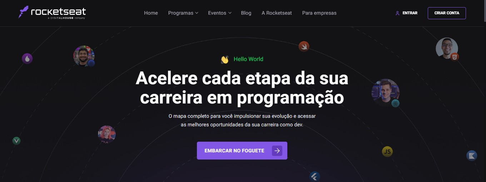
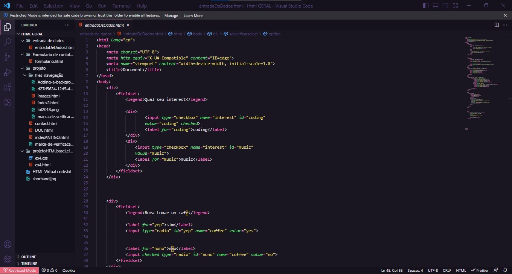
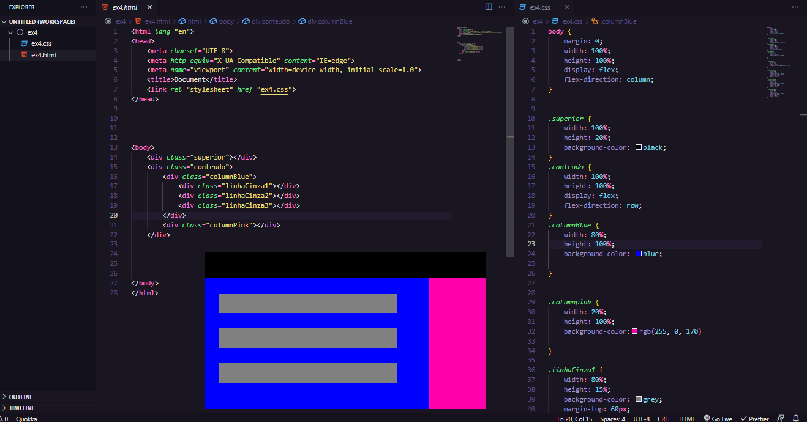
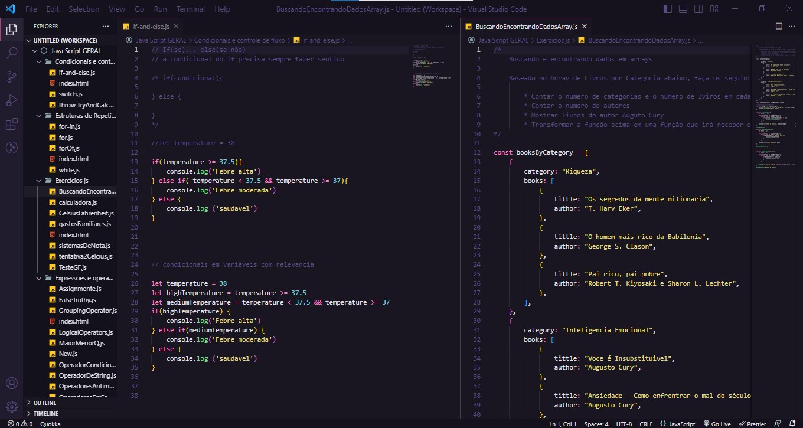
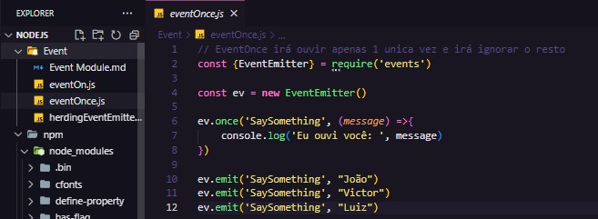
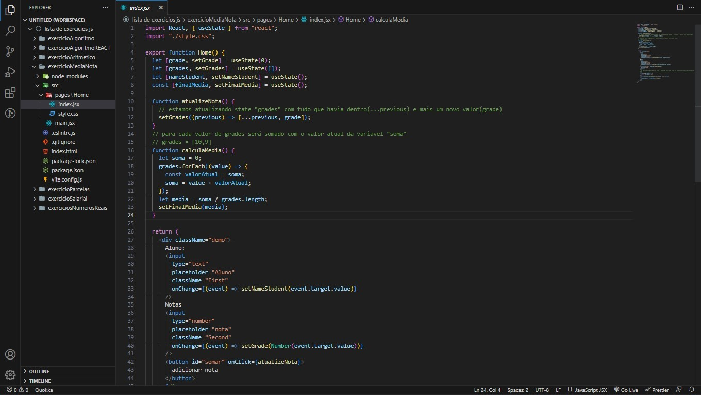

20 de Setembro de 2022
O inicio da Jornada

Por volta do início de 2022, surgiu a oportunidade, vinda do meu
irmão, de aprender programação através da Rocketseat. Naquele momento,
havia deixado a oportunidade passar, sem considerar o que poderia me
proporcionar no futuro. Com o passar do tempo, comecei a pensar sobre
a questão, e me perguntar: “e se eu tentar?”, “mas e se eu desistir?”,
“e se eu só estiver perdendo meu tempo?”... Repetidamente esses
questionamentos vieram à tona, até que em 10 de setembro, no dia do
meu aniversário, retomei a conversa com meu irmão sobre a
oportunidade, vários meses após sua oferta. A partir daí, obtive a
coragem de iniciar os estudos por conta própria, utilizando a
plataforma da Rocketseat. No começo, acreditava ser um bicho de sete
cabeças, apesar da dificuldade em me expressar, nessa caminhada foram
variadas dúvidas sanadas, e muitas outras ainda por vir. E se hoje,
dia 18 de maio de 2023, estou empenhado no aprendizado da programação,
dedico todos créditos aos envolvidos, principalmente ao meu irmão e a
Rocketseat, mas também a todos aqueles que me incentivaram a nunca
desistir.
20 de setembro de 2022
O inicio do HTML

Ao começar a escrever minhas primeiras linhas de HTML, julgava ser
extremamente complicado, quase impossível. Sem conhecimento básico,
não sabia nem nomear os arquivos, mas graças a Rocketseat, e a todo
apoio obtido ao decorrer da trilha (Fundamentar), consegui aprender
inúmeras coisas. Com o passar das trilhas, percebi que realmente
estava gostando, e aqueles pensamentos contrários, haviam saído da
minha cabeça. Se tornou algo divertido de estudar e aprender.
24 de dezembro de 2022
O início de um caminho no CSS...
Pouco tempo depois de terminar o conteúdo disponível de HTML, sedento
por conhecimento, iniciei outros conteúdos, partindo dessa vez para o
CSS. Sem saber praticamente nada de inglês, no primeiro momento,
julguei ser complicado, por usar muitas palavras do idioma.
Entretanto, porque não usar o google tradutor para entender algumas
coisas, não é mesmo? Quem quer sempre dá um jeito!
... 24 de dezembro de 2022
Leyouts com HTML+CSS

Comecei a aplicar algumas estilizações, praticando o HTML + CSS,
baseado na ajuda do meu irmão. Alguns desafios foram propostos, como
criar layouts, por exemplo. Apesar da dificuldade inicial, o
conhecimento adquirido com a Rocket e com o apoio dele, consegui
produzir os layouts dos desafios.
28 de dezembro de 2022
Inicio do Javascript

Comecei a trilhar o caminho do Javascript, e acabou se tornando uma
paixão pessoal. De início, começamos com a introdução, seguindo para
“Primeiros Passos”, “Tipos de dados” e etc. Nessa altura, tive uma
leve dificuldade em salvar as aulas, por serem arquivos .js, não
poderia ser igual ao html, e acabei salvando de um jeito um tanto
quanto peculiar... Atingindo um nível levemente avançado no conteúdo,
me habituei com o jeito de salvar o conteúdo. Para alguns se apresenta
como uma bagunça generalizada, contudo, considero satisfatório.
10 de janeiro de 2023
Aprendendo Node

A partir do avanço em diversas trilhas disponíveis na Rocketseat, à
exemplo da “Discover” e “Fundamentar”, entendi qual carreira gostaria
de seguir. Atentando ao fator ‘uau’, identifiquei no aprendizado do
Javascript uma afeição especial. Dispondo do aprendizado sobre html,
css, “javascript”, git, github, Noje, NodeJS, busquei seguir por esse
caminho, seguindo o conteúdo disponível pela Rocket, além de receber
algumas aulas particulares do meu irmão, descobri estar cada vez mais
apaixonado pela programação. Assim sendo, a possibilidade de aplicar o
javascript tanto front, quanto back-end, despertou um interesse a
mais. Com o passar do tempo, observei que ficava mais contente a cada
dificuldade superada. Foram várias noites sem dormir, tive insônia por
não conseguir resolver certos problemas, mas continuei seguindo em
frente, sem me deixar abalar.
20 de janeiro até a atualidade...
Ao futuro...

Seguindo o caminho do Javascript e finalizado o “Especializar”, pude
aprender muita coisa após vários perrengues vivenciados. Agradeço a
Rocketseat e ao meu irmão, do fundo do meu coração, por sempre me
incentivar a nunca desistir. Hoje, olho pra trás e vejo as
organizações criminosas desenvolvidas, vejo códigos sem indentação
nenhuma, sem seguir uma simples hierarquia. Penso que estive
absorvendo conhecimento em diversos momentos, ao contrário do que
diziam, e vejo que no fundo, tudo tem seu tempo. Após várias noites
dormindo tarde para estudar, aulas particulares, desafios
solucionados, constatei um ânimo surreal, sendo gratificante por ter
(depois de muito tempo) seguido o conselho e acessado a plataforma.
Tudo isso, graças ao meu irmão. Sigo estudando e praticando
continuamente, sem desistir, e cada dia que passa irei aprender mais.
Nunca iremos saber TODO conteúdo, mas podemos usar todo conteúdo
aprendido! E mais importante, é entender que precisamos estudar até o
final da vida, pois tudo é aprendizado.